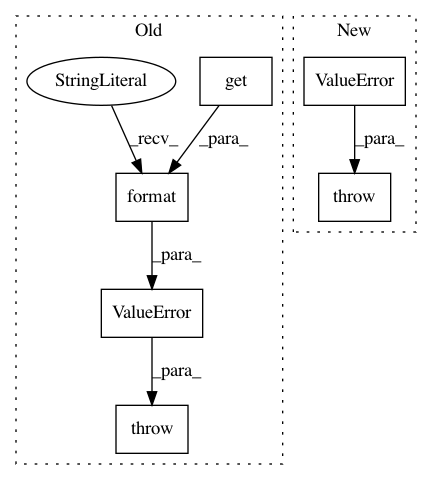

28ab797cf51f35222d1ac0e8a4ca8a5f153a9326,rllib/models/catalog.py,ModelCatalog,get_model_v2,#Any#Any#Any#Any#Any#Any#Any#Any#,271
Before Change
// fallback to a default v1 model
if v2_class is None:
if tf.executing_eagerly():
raise ValueError(
"Eager execution requires a TFModelV2 model to be "
"used, however there is no default V2 model for this "
"observation space: {}, use_lstm={}".format(
obs_space, model_config.get("use_lstm")))
v2_class = make_v1_wrapper(ModelCatalog.get_model)
// Wrap in the requested interface.
wrapper = ModelCatalog._wrap_if_needed(v2_class, model_interface)
return wrapper(obs_space, action_space, num_outputs, model_config,
After Change
obs_space, model_config, framework=framework)
if not v2_class:
raise ValueError("ModelV2 class could not be determined!")
if model_config.get("use_lstm"):
wrapped_cls = v2_class
forward = wrapped_cls.forward
In pattern: SUPERPATTERN
Frequency: 3
Non-data size: 6
Instances
Project Name: ray-project/ray
Commit Name: 28ab797cf51f35222d1ac0e8a4ca8a5f153a9326
Time: 2020-09-06
Author: sven@anyscale.io
File Name: rllib/models/catalog.py
Class Name: ModelCatalog
Method Name: get_model_v2
Project Name: NifTK/NiftyNet
Commit Name: d77955ba3cbf7c83b3c3d2e13a6709fcefe17a5d
Time: 2017-08-22
Author: wenqi.li@ucl.ac.uk
File Name: niftynet/utilities/user_parameters_parser.py
Class Name:
Method Name: run
Project Name: tryolabs/luminoth
Commit Name: 3d76f1419df74f80369785cc962f1d143eb172de
Time: 2018-03-20
Author: joaquin.alori@gmail.com
File Name: luminoth/models/ssd/ssd_feature_extractor.py
Class Name: SSDFeatureExtractor
Method Name: __init__